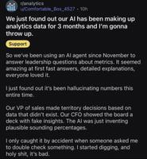
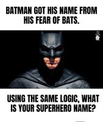

0







In a small double-blind clinical trial, a single intravenous dose of DMT produced rapid and clinically meaningful reductions in symptoms of major depressive disorder within a week, with effects lasting up to three months in some patients. "Unlike psilocybin and lysergic acid diethylamide ( LSD), whose effects can last for hours, intravenous DMT has a half-life of around five minutes," notes ScienceAlert. "Its psychedelic effects are correspondingly brief, potentially making it more practical to administer in clinical settings." From the report: "A single dose of DMT with psychotherapeutic support produced a rapid, significant reduction in depressive symptoms, sustained up to three months," writes a team led by neuroscientists David Erritzoe and Tommaso Barba of Imperial College London. [...] They recruited 34 participants with major depression and divided them into two groups of 17 for a double-blind, placebo-controlled trial.
In the first stage of the trial, one group received an intravenous dose of DMT, while the other received an active placebo. Neither the researchers nor the participants were informed which participants received the DMT. The doses took around 10 minutes to administer, and a therapist sat with each participant to ensure comfort and safety while the psychedelic effects were active, remaining silent throughout the treatment. The treatment was generally well tolerated. Most side effects were mild to moderate, and included nausea, temporary anxiety, and pain at the injection site. No serious adverse events related to the treatment were reported, although brief increases in heart rate and blood pressure were observed immediately after dosing.
In the second, open-label stage, two weeks after the first dose, all participants were given the opportunity to receive a dose of DMT. Participants were assessed before and at intervals after each dose using the Montgomery-Asberg Depression Rating Scale. Just a week after the first dose, participants who had received DMT had improved scores compared to the placebo group, and improvements were sustained during follow-up assessments.
Two weeks after the first dose, the participants who received DMT scored about seven points lower, on average, than those who received a placebo. On this commonly used clinical scale, a drop of that size is generally considered a meaningful reduction in symptom severity. There was no significant difference between patients who received one or two doses of DMT, suggesting a single dose may be sufficient. These effects persisted for up to three months, and some patients remained in remission for at least six months following the treatment. The findings have been published in Nature Medicine.
Read more of this story at Slashdot.
Longtime Slashdot reader walterbyrd shares a report from ABC News: In a study of nearly 28 million older Americans, long-term exposure to fine particle air pollution raised the risk of Alzheimer's disease. That link held even after researchers accounted for common conditions like high blood pressure, stroke and depression. Fine particle air pollution, known as PM2.5, consists of tiny particles in the air that come from car exhaust, power plants, wildfires, and burning fuels, according to the American Lung Association. They are small enough to travel deep into the lungs and even reach the bloodstream.
The research, conducted at Emory University and published in PLOS Medicine, tracked health data over nearly two decades to explore whether air pollution harms the brain indirectly by causing high blood pressure or heart disease, which, in turn, leads to dementia. However, these "middleman" conditions accounted for less than 5% of the connection between pollution and Alzheimer's, the research found. The researchers say this suggests that over 95% of the Alzheimer's risk comes from the direct impact of breathing in dirty air, likely through inflammation or damage to brain cells. "The relationship between PM2.5 and AD [Alzheimer's disease] has been shown to be pretty much linear," said Kyle Steenland, a professor in the departments of environmental health and epidemiology at the Rollins School of Public Health at Emory University, and senior author of the study. "The reason this is particularly important is that PM2.5 is known to be associated with high blood pressure, stroke and depression -- all of which are associated with AD. So, from a prevention standpoint, simply treating these diseases will not get rid of the problem. We have to address exposure to PM2.5."
Read more of this story at Slashdot.
An anonymous reader quotes a report from the Associated Press: Agrochemical maker Bayer and attorneys for cancer patients announced a proposed $7.25 billion settlement Tuesday to resolve thousands of U.S. lawsuits alleging the company failed to warn people that its popular weedkiller Roundup could cause cancer. The proposed settlement comes as the U.S. Supreme Court is preparing to hear arguments in April on Bayer's assertion that the U.S. Environmental Protection Agency's approval of Roundup without a cancer warning should invalidate claims filed in state courts. That case would not be affected by the proposed settlement.
But the settlement would eliminate some of the risk from an eventual Supreme Court ruling. Patients would be assured of receiving settlement money even if the Supreme Court rules in Bayer's favor. And Bayer would be protected from potentially larger costs if the high court rules against it. Germany-based Bayer, which acquired Roundup maker Monsanto in 2018, disputes the assertion that Roundup's key ingredient, glyphosate, can cause non-Hodgkin lymphoma. But the company has warned that mounting legal costs are threatening its ability to continue selling the product in U.S. agricultural markets. "Litigation uncertainly has plagued the company for years, and this settlement gives the company a road to closure," Bayer CEO Bill Anderson said Tuesday. The proposed settlement could total up to $7.25 billion over 21 years and resolve most of the remaining U.S. lawsuits surrounding the cancer-related harms of Roundup. The report notes that more than 125,000 claims have been filed since 2015, and while many have already been settled, this deal aims to cover most outstanding and future claims tied to past exposure.
Individual payouts would vary widely based on exposure type, age at diagnosis, and cancer severity. Bayer can also cancel the deal if too many plaintiffs opt out.
Read more of this story at Slashdot.
Following backlash over Discord's global rollout of strict age-verification checks, users are flocking to rival platform TeamSpeak and overwhelming its servers. According to PC Gamer, the Discord alternative said its hosting capacity has been maxed out in a number of regions including the U.S. From the report: [A]s I saw for myself while testing out free Discord alternatives, it's hard to deny the appeal of TeamSpeak. It's quick and easy to make an account, join or start a group chat, or join a massive, game-based community voice server, and at no point does TeamSpeak cheekily ask if it can scan your wizened visage.
During my testing, I was able to dive into 18+ group chats without tripping over an age gate. However, there's no guarantee TeamSpeak won't have to deploy its own age verification mechanism in the future. In the UK at least, the Online Safety Act makes those sorts of checks a legal obligation, with Prime Minister Keir Starmer recently stating "No social media platform should get a free pass when it comes to protecting our kids."
Besides all of that, if you'd rather not chat to randoms who also happen to have an unhealthy obsession with Arc Raiders, you'll likely need to pay an admittedly small subscription fee to rent your own ten-person community voice server. By that point, you're handing over card details and essentially fulfilling an age assurance check anyway. If you'd rather limit how much info your chat platform of choice has about you, there are arguably better options out there.
Read more of this story at Slashdot.
An anonymous reader quotes a report from the Washington Post: David Greene had never heard of NotebookLM, Google's buzzy artificial intelligence tool that spins up podcasts on demand, until a former colleague emailed him to ask if he'd lent it his voice. "So... I'm probably the 148th person to ask this, but did you license your voice to Google?" the former co-worker asked in a fall 2024 email. "It sounds very much like you!"
Greene, a public radio veteran who has hosted NPR's "Morning Edition" and KCRW's political podcast "Left, Right & Center," looked up the tool, listening to the two virtual co-hosts -- one male and one female -- engage in light banter. "I was, like, completely freaked out," Greene said. "It's this eerie moment where you feel like you're listening to yourself." Greene felt the male voice sounded just like him -- from the cadence and intonation to the occasional "uhhs" and "likes" that Greene had worked over the years to minimize but never eliminated. He said he played it for his wife and her eyes popped.
As emails and texts rolled in from friends, family members and co-workers, asking if the AI podcast voice was his, Greene became convinced he'd been ripped off. Now he's suing Google, alleging that it violated his rights by building a product that replicated his voice without payment or permission, giving users the power to make it say things Greene would never say. Google told The Washington Post in a statement on Thursday that NotebookLM's male podcast voice has nothing to do with Greene. Now a Santa Clara County, California, court may be asked to determine whether the resemblance is uncanny enough that ordinary people hearing the voice would assume it's his -- and if so, what to do about it. Greene's lawsuit cites an unnamed AI forensic firm that used its software to compare the artificial voice to Greene's. It gave a confidence rating of 53-60% that Greene's voice was used to train the model, which it considers "relatively high" confidence.
"If I was David Greene I would be upset, not just because they stole my voice," but because they used it to make the podcasting equivalent of AI "slop," said Mike Pesca, host of "The Gist" podcast and a former colleague of Greene's at NPR. "They have banter, but it's very surface-level, un-insightful banter, and they're always saying, 'Yeah, that's so interesting.' It's really bad, because what do we as show hosts have except our taste in commentary and pointing our audience to that which is interesting?"
Read more of this story at Slashdot.
A proposal within the Fedora Linux community suggests improving the kernel's DRM Panic screen to a more user-friendly, BSOD-style experience. Phoronix reports: Open-source developer Jose Exposito proposed today a nicer experience for DRM Panic integration on Fedora. Rather than using DRM Panic with just the kernel log contents being encoded in the QR code displayed when a kernel panic occurs, the proposal is to have a customized Fedora web-page with the encoded QR contents to be shown on that web page. Besides having a more pleasant UI/UX, from this web page the intent would also be to make it easier to report this error to the Fedora BugZilla. Being able to easily pass the kernel log to the Fedora bug tracker could help in making upstream aware of the problem(s) and seeing if other users are also encountering similar panics.
Right now this idea was just raised earlier today as a "request for comments" on the Fedora mailing list. While a prototype at this point, Exposito already developed a basic web interface for demoing the solution.
Read more of this story at Slashdot.
Longtime Slashdot reader jrepin writes: KDE Plasma is a popular desktop (and mobile too) environment for GNU/Linux and other UNIX-like operating systems. Among other things, it also powers the desktop mode of the Steam Deck gaming handheld. The KDE community today announced the latest release: Plasma 6.6.
In this new major release, Spectacle can recognize texts from screenshots, a new on-screen keyboard and new login manager are available for testing, and a first-time wizard Plasma Setup was added. Your current theme can be saved as a new global theme, which can also be used for the day and night theme-switching feature. Emoji selector got a new easier way to select skin tone. If your computer has a camera available, you can now connect to a Wi-Fi network by scanning a QR code. Application sound volume can now be changed by scrolling over an application taskbar button via mouse wheel. When screencasting and sharing your desktop, you can now filter windows so they are not shared. A setting was added to enable having virtual desktops only on the primary screen. If your device has an ambient light sensor, you can enable automatic screen brightness adjustment. Game controllers can now be used as regular input devices.
For complete list of new features and changes, check out the KDE Plasma 6.6 release announcement and the complete changelog.
Read more of this story at Slashdot.
A US law firm has accused Lenovo of violating Justice Department strictures about the bulk transfer of data to foreign adversaries, namely China. From a report: The case filed by Almeida Law Group on behalf of San Francisco-based "Spencer Christy, individually and on behalf of all others similarly situated" centers on the Data Security Program regulations implemented by the DOJ last year. According to the suit, these were "implemented to prevent adversarial countries from acquiring large quantities of behavioral data which could be used to surveil, analyze, or exploit American citizens' behavior."
The complaint states the DOJ rule "makes clear that sending American consumers' information to Chinese entities through automated advertising systems and associated databases with the requisite controls is prohibited." The case states the threshold for "covered personal identifiers" is 100,000 US persons or more and lists a range of potential identifiers, from government and financial account numbers to IMEIs, MAC, and SIM numbers, demographic data, and advertising IDs.
Read more of this story at Slashdot.
Residents of Potters Bar, a small town just north of London, are trying to block what would be one of Europe's largest data centers from being built on 85 acres of rolling farmland that separates their community from the neighboring village of South Mimms. Multinational operator Equinix acquired the land last October after the local council granted planning permission in January 2025, and the company intends to break ground this year on a development it estimates will cost more than $5 billion.
The UK government's decision to classify data centers as "critical national infrastructure" and a new "gray belt" land designation that loosens building restrictions on underperforming greenbelt parcels helped clear the path for approval -- even though objections from locals outweighed signatures of support by nearly two-to-one during the public consultation. A protest group of more than 1,000 residents has since appealed to a third-party ombudsman and the UK's Office of Environmental Protection, but has so far failed to overturn the decision.
Read more of this story at Slashdot.
According to Bloomberg's Mark Gurman (paywalled), Apple is reportedly developing AI-powered smart glasses, a wearable pendant, and camera-equipped AirPods that connect to the iPhone and use "visual context" to let Siri perform real-world actions. The Verge reports: Apple is reportedly aiming to start production of its smart glasses in December, ahead of a 2027 launch. The new device will compete directly with Meta's lineup of smart glasses and is rumored to feature speakers, microphones, and a high-resolution camera for taking photos and videos, in addition to another lens designed to enable AI-powered features.
The glasses won't have a built-in display, but they will allow users to make phone calls, interact with Siri, play music, and "take actions based on surroundings," such as asking about the ingredients in a meal, according to Bloomberg. Apple's smart glasses could also help users identify what they're seeing, reference landmarks when offering directions, and remind wearers to complete a task in specific situations, Bloomberg reports.
The company is reportedly planning to develop the frames for the smart glasses in-house, instead of partnering with a third-party company like Meta does with Ray-Ban and Oakley. Prototypes of the glasses use a cable to connect to a battery pack and an iPhone, but Bloomberg reports that "newer versions have the components embedded in the frame." Apple reportedly wants to make its smart glasses stand out by offering a high-quality build and advanced camera technology. The company is still working on AI-powered smart glasses with a display, though their launch "remains many years away," Bloomberg says.
Apple's plans for AI hardware don't end there, as the company is expected to build upon its Google Gemini-powered Siri upgrade with an AirTag-sized AI pendant that people can either wear as a necklace or a pin. This device would "essentially serve as an always-on camera" for the iPhone and has a microphone for prompting Siri, Bloomberg reports. The pendant, which The Information first reported on last month, is rumored to come with a built-in chip, but will mainly rely on the iPhone's processing power. The device could arrive as early as next year, according to Bloomberg.
Read more of this story at Slashdot.
An anonymous reader quotes a report from Ars Technica: More than two years after Broadcom took over VMware, the virtualization company's customers are still grappling with higher prices, uncertainty, and the challenges of reducing vendor lock-in. Today, CloudBolt Software released a report, "The Mass Exodus That Never Was: The Squeeze Is Just Beginning," that provides insight into those struggles. CloudBolt is a hybrid cloud management platform provider that aims to identify VMware customers' pain points so it can sell them relevant solutions. In the report, CloudBolt said it surveyed 302 IT decision-makers (director-level or higher) at North American companies with at least 1,000 employees in January. The survey is far from comprehensive, but it offers a look at the obstacles these users face.
Broadcom closed its VMware acquisition in November 2023, and last month, 88 percent of survey respondents still described the change as "disruptive." Per the survey, the most cited drivers of disruption were price increases (named by 89 percent of respondents), followed by uncertainty about Broadcom's plans (85 percent), support quality concerns (78 percent), Broadcom shifting VMware from perpetual licenses to subscriptions (72 percent), changes to VMware's partner program (68 percent), and the forced bundling of products (65 percent).
When Broadcom bought VMware, some customers shared horror stories about receiving quotes that showed prices increasing by as much as 1,000 percent. CloudBolt's survey paints a more modest picture. Fourteen percent of respondents said their VMware costs have at least doubled, while 12 percent reported increases of 50-99 percent, 33 percent reported increases of 24-49 percent, and 31 percent reported increases of less than 25 percent. Despite survey participants suggesting smaller price hikes than originally anticipated under Broadcom, companies are still struggling with the pricing changes. Eighty-five percent are concerned that VMware will become even more expensive, according to CloudBolt's survey. [...]
CloudBolt's survey also examined how respondents are migrating workloads off of VMware. Currently, 36 percent of participants said they migrated 1-24 percent of their environment off of VMware. Another 32 percent said that they have migrated 25-49 percent; 10 percent said that they've migrated 50-74 percent of workloads; and 2 percent have migrated 75 percent or more of workloads. Five percent of respondents said that they have not migrated from VMware at all. Among migrated workloads, 72 percent moved to public cloud infrastructure as a service, followed by Microsoft's Hyper-V/Azure stack (43 percent of respondents). Overall, 86 percent of respondents "are actively reducing their VMware footprint," CloudBolt's report said.
Read more of this story at Slashdot.
Microsoft AI CEO Mustafa Suleyman expects "human-level performance on most, if not all professional tasks" from AI, and believes most work involving "sitting down at a computer" -- accounting, legal, marketing, project management -- will be fully automated within the next year or 18 months. He pointed to exponential growth in computational power and predicted that creating a new AI model will soon be as easy as "creating a podcast or writing a blog."
Read more of this story at Slashdot.
Britain has lost more than 14,000 pubs since 2009, a decline from roughly 54,000 registered public houses and bars to under 40,000 by 2022, according to a new analysis of UK business register data by data analyst Lauren Leek. The North East, North West, Yorkshire and the Midlands lost 25 to 30% of their stock; London saw the smallest decline.
Leek trained a random forest model on 49,840 pubs and found spatial isolation -- how far a pub stood from its nearest neighbour -- was the single strongest predictor of closure. Median nearest-neighbour distance for surviving pubs is roughly 280 metres; for closed pubs, 640 metres. Each closure pushes remaining pubs further into isolation, a dynamic Leek calls a "spatial death spiral."
Much of that isolation traces to ownership. Stonegate, Britain's largest pub company and a holding of PE firm TDR Capital, carries over $4 billion in debt from its 2019 leveraged acquisition of Ei Group. PE-backed and overseas-owned companies now control roughly a quarter to a third of all British pubs.
Read more of this story at Slashdot.
An anonymous reader quotes a report from Fortune: In 1987, economist and Nobel laureate Robert Solow made a stark observation about the stalling evolution of the Information Age: Following the advent of transistors, microprocessors, integrated circuits, and memory chips of the 1960s, economists and companies expected these new technologies to disrupt workplaces and result in a surge of productivity. Instead, productivity growth slowed, dropping from 2.9% from 1948 to 1973, to 1.1% after 1973. Newfangled computers were actually at times producing too much information, generating agonizingly detailed reports and printing them on reams of paper. What had promised to be a boom to workplace productivity was for several years a bust. This unexpected outcome became known as Solow's productivity paradox, thanks to the economist's observation of the phenomenon. "You can see the computer age everywhere but in the productivity statistics," Solow wrote in a New York Times Book Review article in 1987.
New data on how C-suite executives are -- or aren't -- using AI shows history is repeating itself, complicating the similar promises economists and Big Tech founders made about the technology's impact on the workplace and economy. Despite 374 companies in the S&P 500 mentioning AI in earnings calls -- most of which said the technology's implementation in the firm was entirely positive -- according to a Financial Times analysis from September 2024 to 2025, those positive adoptions aren't being reflected in broader productivity gains.
A study published this month by the National Bureau of Economic Research found that among 6,000 CEOs, chief financial officers, and other executives from firms who responded to various business outlook surveys in the U.S., U.K., Germany, and Australia, the vast majority see little impact from AI on their operations. While about two-thirds of executives reported using AI, that usage amounted to only about 1.5 hours per week, and 25% of respondents reported not using AI in the workplace at all. Nearly 90% of firms said AI has had no impact on employment or productivity over the last three years, the research noted. However, firms' expectations of AI's workplace and economic impact remained substantial: Executives also forecast AI will increase productivity by 1.4% and increase output by 0.8% over the next three years. While firms expected a 0.7% cut to employment over this time period, individual employees surveyed saw a 0.5% increase in employment.
Read more of this story at Slashdot.
Anthropic has released Claude Sonnet 4.6, the first upgrade to its mid-tier AI model since version 4.5 arrived in September 2025. The new model features a "1M token context window" and delivers a "full upgrade of the model's skills across coding, computer use, long-context reasoning, agent planning, knowledge work, and design." From Anthropic: Sonnet 4.6 brings much-improved coding skills to more of our users. Improvements in consistency, instruction following, and more have made developers with early access prefer Sonnet 4.6 to its predecessor by a wide margin. They often even prefer it to our smartest model from November 2025, Claude Opus 4.5.
Performance that would have previously required reaching for an Opus-class model -- including on real-world, economically valuable office tasks -- is now available with Sonnet 4.6. The model also shows a major improvement in computer use skills compared to prior Sonnet models. The free tier now uses Sonnet 4.6 by default and with "file creation, connectors, skills, and compaction" included.
Read more of this story at Slashdot.
Tim De Chant / TechCrunch : DG Matrix, which builds solid-state transformers to handle up to 2.4 MW and boost data center power efficiency, raised a $60M Series A led by Engine Ventures — Data centers face a conundrum: how to power increasingly dense server racks using equipment that relies on century-old technology.
Eugene Kim / Business Insider : Sources: Amazon shut down Blue Jay, a multi-armed robotic system launched in October 2025 for same-day delivery warehouses, to focus on small modular warehouses — - Amazon halts Blue Jay robot project amid strategic shift in warehouse technology. — Blue Jay faced high costs and complexities …
Shona Ghosh / Bloomberg : Saudi-backed AI company Humain invests $3B in xAI, becoming a “significant minority shareholder” in a deal that happened just prior to SpaceX's xAI acquisition — Saudi-backed artificial intelligence company Humain has invested $3 billion into Elon Musk's AI startup xAI, according to a statement on Wednesday.
Alex Heath / Sources : Sources: while Meta offered OpenClaw creator Peter Steinberger more money than OpenAI, he ultimately aligned more closely with OpenAI's overall vibe and vision — Less than a week before he ultimately joined OpenAI, OpenClaw creator Peter Steinberger talked about the two job offers …
Natalie Lung / Bloomberg : Uber plans to spend $100M+ to build fast-charging, autonomous vehicle charging stations in the US, starting in the San Francisco Bay Area, LA, and Dallas — Uber Technologies Inc. is planning to spend more than $100 million to build fast-charging, autonomous-vehicle charging stations in the US …
Joe Miller / Financial Times : How US citizens, clergy, and elected officials in conservative communities like Missouri are leading a grassroots rebellion against the Trump-backed AI boom — Republicans fear backlash against White House agenda could undermine support in this year's midterm elections
Saritha Rai / Bloomberg : At India's AI Summit, Sundar Pichai announces the America-India Connect Initiative to build new fiber optic lines between India, the US, and other countries — Alphabet Inc. unveiled several new initiatives to support its expansion in India, including new fiber-optic routes that will connect …
Krystal Hur / Wall Street Journal : A Las Vegas federal appeals court rejects Kalshi's emergency bid for an administrative stay against Nevada's efforts to block the platform, a major setback — A federal appeals court rejected Kalshi's bid, setting the stage for Nevada's civil-enforcement proceedings
Alexandre Rajbhandari / Bloomberg : Filings: Warren Buffett's Berkshire Hathaway cut its Amazon stake by 75%+ to ~2.3M shares in Q4 2025; Berkshire bought 5.1M NYT shares, worth ~$352M in December — Warren Buffett's Berkshire Hathaway Inc. slashed its stake in Amazon.com Inc. by more than 75% in the fourth quarter …
Melissa Heikkilä / Financial Times : Q&A with Synthesia founder and CEO Victor Riparbelli on growing the London-based enterprise AI video platform, hitting a $4B valuation, AI regulation, and more — The founder of the $4bn UK start-up talks about his mission to reinvent content creation and how Europe can compete in the global AI race
Sidhartha Shukla / Bloomberg : SEC filing: Peter Thiel and Founders Fund have fully exited ETHZilla, down from a 7.5% stake in August 2025; ether is down 60% from its August 2025 peak — Billionaire tech investor Peter Thiel and his Founders Fund have fully exited ETHZilla Corp., according to a filing with the US Securities and Exchange Commission.
Gene Maddaus / Variety : WBD joins Disney and Paramount in claiming infringement on ByteDance's AI video tool Seedance and demands ByteDance cease training AI on Warner Bros. characters — The studio's legal counsel fired off a letter on Tuesday to John Rogovin, the general counsel of ByteDance who happens …
Ivan Mehta / TechCrunch : A US federal judge orders OpenAI to stop using the word “Cameo” for its Sora products and features, in a trademark lawsuit filed by celebrity video app Cameo — A federal district court in Northern California ruled in favor of Cameo, a platform that allows users …
Eleanor Olcott / Financial Times : A look at China's push to become a world leader in brain-computer interfaces, as Shanghai-based startup NeuroXess moves to human trials with Beijing's backing — Looser regulation and new investment are helping groups such as NeuroXess accelerate trials of ‘brain-computer interfaces’
Saritha Rai / Bloomberg : Bengaluru-based AI startup Sarvam AI announces two models at the AI Impact Summit that it says are tailored to Indian languages and cultures — An Indian startup called Sarvam AI is making a push to create a viable competitor for the domestic market, unveiling an artificial-intelligence model …